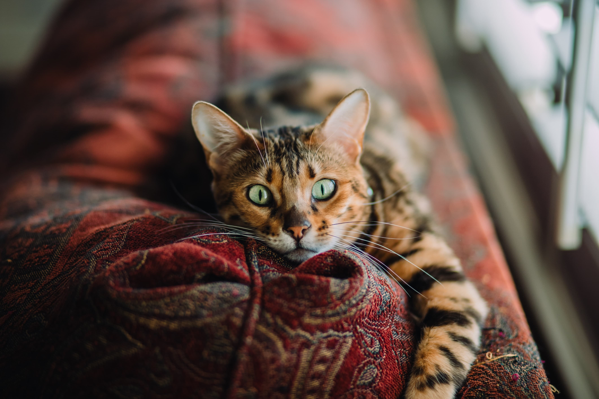
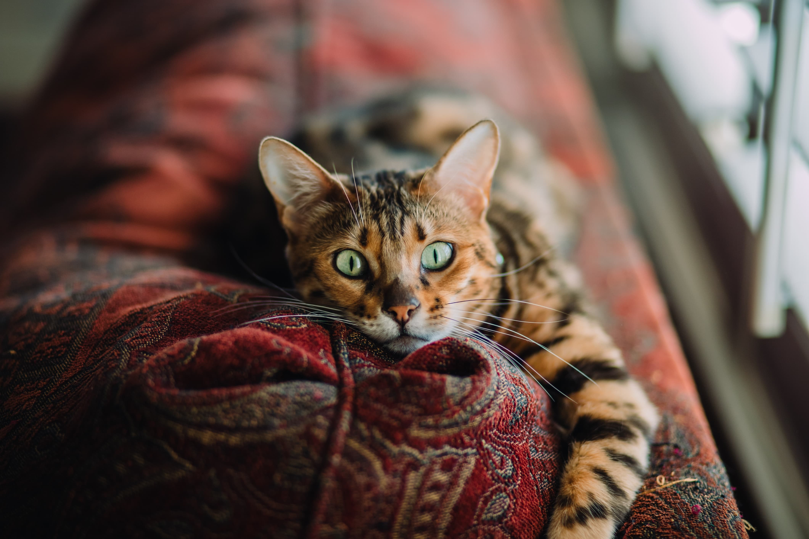

O que é necessário para realizar a adoção?
O processo é bastante simples, básicamente são formalidades para controlar o processo de adoção e tambem garantir que o animal terá um lar agradável para recomeçar a vida, lembrando que as regras podem mudar de acordo com a instituição. No geral os requisitos consistem em:
- Idade: Permitido somente pessoas acima de 21 anos;
- Documentos: Necessário a apresentação de RG, CPF e comprovante de residência;
- Responsabilidade: Exigência de assinar um termo de responsabilidade;
- Entrevista: Algumas entidades realizam um processo de entrevista, para verificar se a pessoa tem condições de cuidar do animal, como por exemplo questões de alimentação, veterinário, tempo para dar atenção, etc.
- Taxa: Podem ser cobradas pequenas taxas que ajudam a manter em funcionamento a instituição para a manutenção do bem estar dos demais animais que seguirem na fila de adoção.


 
